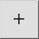

Rajoittamaton
Työkalurivi / kuvake:


Valikko: Tartunta > Rajoittamaton
Shortcut: S, F
Komennot: snapfree | sf
Työkalurivi / kuvake:


Mahdollistaa vapaan sijoittamisen hiirellä. Huomaa, että tämä ei ole lähes koskaan suositeltava tapa asettaa koordinaatteja CAD-järjestelmässä, paitsi vapaan käden viivojen piirtämiseen.